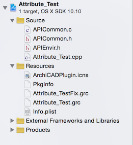

Source structure and compilation issues
The picture below represents the recommended source structure.

The Support folder contains the Inc, Lib, Modules and Tools folders of the API Development Kit (without the documentation). The Attribute_Test folder (taken from the DevKit Examples) contains all the files specific to the add-on. The RFIX folders contain the language-independent resources (usually GBMP, GICN, MDID, VERS), and the related image files in the appropriate RFIX/Images folder. The Src folder contains all the source and header files, and any external shared libraries/DLLs.
Localizable resources (dialogs, strings, help messages, etc.) should go into the Rlang_code folder. The lang_code is a three-letter abbreviation of the language; you can find the accepted variations in GSLocalization.h header file in the Includes folder. Optionally, library parts required by the add-on may also go into the Rlang_code/Library folder, as .xml files.
The Make folders (Make.win, Make.mac) or the top level of the add-on's folder should contain those files which enable compilation from the appropriate integrated development environment (Xcode, VS .NET). If you are supplying your source code to Graphisoft, try to create a .jam make file as well, with the help of the developer support team. This generic Make folder may also contain scripts necessary to build add-on.
The DevKit contains an Add-In Wizard on Windows, and a project template for Xcode on Macintosh in the platform-specific folder inside the Support/Tools folder, which enforces this structure.
The MergeNum.dat file contains the build number of the development kit; it is also put into the 'VERS' resource. It helps tracking problems back to a certain version of the Development Kit.
Non-standard DLLs or shared libraries should also be included, usually in the Src, or optionally in a Lib folder.
As the add-on is the result of a close work between the specificator and the programmer, the specification in Word or plain text format should also accompany the source; put it into the Doc folder. It should match the functionality of the add-on; so if the add-on contains more functionality than the specification, this should be documented in the specification to distinguish between features and bugs. Storing a version history as well is always recommended.
Please also name the main file of the add-on to Attribute_Test.c(pp), the main grc file to Attribute_Test.grc, the main files in the RFIX.win and RFIX.mac folders to Attribute_Test.rc2 and Attribute_Test.r (respectively). The name 'Attribute Test' should also match the main menu title (for tool type add-ons) or the name of the export/import add-on (for I/O type add-ons). In the name of the folders and files you should put an underscore (_) character instead of spaces. For example:
- API name/menu string: Attribute Test
- Folder name: Attribute_Test
- Main files: Attribute_Test.cpp, Attribute_Test.grc, etc.
The source code should compile without any errors or warnings on the platforms given in the specification. Please also describe the compiler and header versions you used to compile your add-on. It's good practice to switch off compiler and linker warnings one by one, so that the source can still be compiled and linked.
The platform-dependent parts should be clearly separated in the source (preferably in a separate file, or you can use the 'Bridge' design pattern); the empty function declarations and definitions for the other platform should be given as well unless the code is very much platform specific.
Don't be afraid of placing meaningful comments in your source code, as in some cases someone else has to debug your code. This is especially true if you use C++ to its extent. You can also use external documentation generation tools (doxygen, etc.) to create the description of the source code out of the comments.
The person responsible for the programmer is also responsible to keep the programmer along these guidelines. If something has to be different from what's written here, then make a note of that in a separate ReadMe file. The responsible person should also become familiar with the source code to the level that he should be able to correct bugs in the code if the programmer is not available or the timeframe is very short.
All documentation, comments, variable and function names should be in English.
The specificator or the programmer should also create a working material for the ReadMe that will go with the add-on.